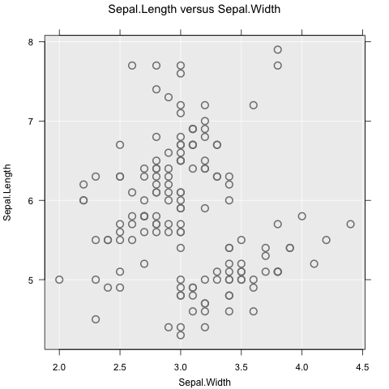
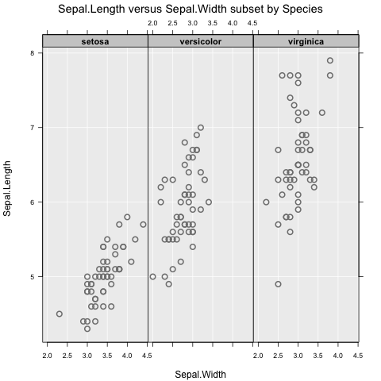
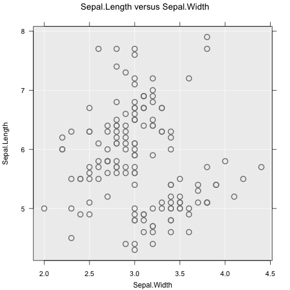
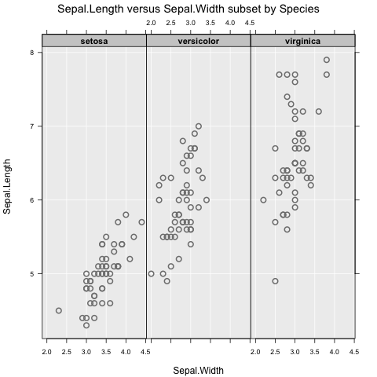

Graphics functions which provide a simple, easy-to-learn interface, allowing beginners to explore and visualize data easily.
Install
Easily install the latest release version from CRAN:
install.packages("iNZightRegression")For the latest development version:
# install.packages("devtools")
devtools::install_github("iNZightVIT/iNZightTools")
devtools::install_github("iNZightVIT/iNZightMR")
devtools::install_github("iNZightVIT/iNZightPlots")Usage
iNZightPlots provides a simple interface to graphics, which are most easily produced using the following function:
library(iNZightPlots)
inzplot(~Sepal.Length, data = iris)
From there, formula notation can be used to explore relationships between variables:
inzplot(Sepal.Length ~ Species, data = iris)
inzplot(Sepal.Length ~ Sepal.Width, data = iris)
inzplot(Sepal.Length ~ Sepal.Width | Species, data = iris) 

These functions all produce different graphs (dot plot and scatter plot), which means the focus is on exploring data, not on which type of graph to use. Subsetting works as expected, and can include up to two variables (e.g., y ~ x | g1 + g2).
There are additionally two companion functions for summary and inference information, which are
inzsummary(~Sepal.Length, data = iris)
#> ====================================================================================================
#> iNZight Summary
#> ----------------------------------------------------------------------------------------------------
#> Primary variable of interest: Sepal.Length (numeric)
#>
#> Total number of observations: 150
#> ====================================================================================================
#>
#> Summary of Sepal.Length:
#> ------------------------
#>
#> Estimates
#>
#> Min 25% Median 75% Max Mean SD Sample Size
#> 4.3 5.1 5.8 6.4 7.9 5.843 0.8281 150
#>
#>
#> ====================================================================================================
inzinference(Sepal.Length ~ Species, data = iris)
#> ====================================================================================================
#> iNZight Inference using Normal Theory
#> ----------------------------------------------------------------------------------------------------
#> Primary variable of interest: Sepal.Length (numeric)
#> Secondary variable: Species (categorical)
#>
#> Total number of observations: 150
#> ====================================================================================================
#>
#> Inference of Sepal.Length by Species:
#> -------------------------------------
#>
#> Group Means with 95% Confidence Intervals
#>
#> Estimate Lower Upper
#> setosa 5.006 4.906 5.106
#> versicolor 5.936 5.789 6.083
#> virginica 6.588 6.407 6.769
#>
#> One-way Analysis of Variance (ANOVA F-test)
#>
#> F = 119.26, df = 2 and 147, p-value < 2.22e-16
#>
#> Null Hypothesis: true group means are all equal
#> Alternative Hypothesis: true group means are not all equal
#>
#> Pairwise differences in group means with 95% Confidence Intervals and P-values
#> (The CIs and P-values have been adjusted for multiple comparisons)
#>
#> Estimate Lower Upper P-value
#> ---------------------------------------------------------------------
#> setosa - versicolor -0.930 -1.1738 -0.6862 < 2.22e-16
#> setosa - virginica -1.582 -1.8258 -1.3382 < 2.22e-16
#>
#> versicolor - virginica -0.652 -0.8958 -0.4082 < 2.22e-16
#>
#>
#> Null Hypothesis: true difference in group means is zero
#> Alternative Hypothesis: true difference in group means is not zero
#>
#>
#> ====================================================================================================These use the same notation as the plot, and are intended to be used alongside.
Features
There are many, many features available in iNZightPlots, all of which are added simply through additional arguments to inzplot(). For a full list, check ?iNZightPlot (this is the base function for which inzplot() is a convenience wrapper) and ?inzpar.
Colour and size
Probably the most common features to add to a graph, we have the sizeby and colby arguments which map an additional variable to size and colour, respectively:
inzplot(Sepal.Length ~ Sepal.Width, data = iris, colby = Species)Inference lines
Usually you want to know if what you see has any statistical significance, and iNZightPlots makes this easy. We also provide comparison intervals which can be, very simply, interpreted as “overlapping comparison intervals indicate no significant difference between groups”.
# Add confidence intervals
inzplot(Sepal.Length ~ Species, data = iris,
inference.type = c("conf", "comp"), # red and black, respectively
inference.par = "mean"
)For scatter plots, inference uses linear trends. You can add a bootstrap sample of trend estimates using the bs.inference argument:
inzplot(Sepal.Length ~ Sepal.Width, data = iris,
trend = "linear",
bs.inference = TRUE
)